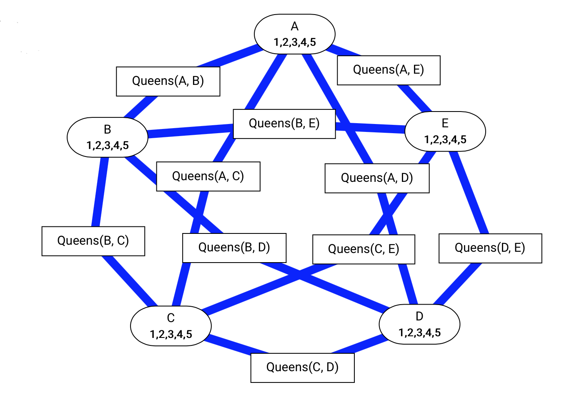
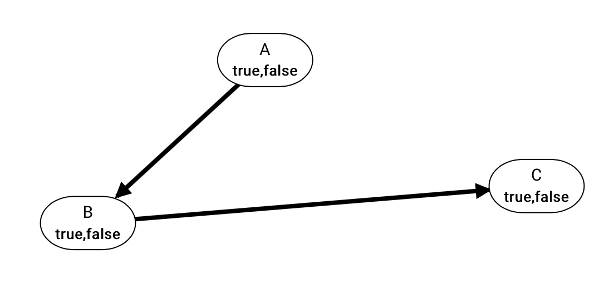

Don't be scared by tons of information here! Basically AISpace2 is designed to be very easy and friendly to use — you can skip this page and go play with it first
and then go back here when you encounter any troubles or questions. If your question is not resolved here, please send it to help@aispace.org.
JupyterLab is based on and very similar to Jupyter Notebook,
a web-based and interactive computing notebook environment. If this is your first time using JupyterLab and you have not used Jupyter Notebook before,
we particularly recommend getting yourself familiarize with Jupyter Notebook Basics and
JupyterLab Interface to quickly get up to speed.
Notice that we will only provide the support for JupyterLab and you might encounter unexpected behaviors if you use AISpace2 in Jupyter Notebook.
(What's the difference between JupyterLab and Jupyter Notebook? See here.)
Fine Step: Advance the procedure to next fine step.
Step: Advance the procedure to next step.
Auto Solve: Run the algorithm step by step until a solution is found.
Pause: Pause as soon as the current fine step has finished. Useful to stop auto solving.
Print Positions: Print the positions of nodes, which can be passed as parameter into problem construction when you want nodes to be at certain place.
You can resize the height of the visualization by dragging the resize handle ()
in the bottom right corner. The width of the visualization can be changed by resizing the window. In either case, the
nodes will reposition themselves until they all fit on screen.
sleep_time: The time, in seconds, between each step in auto solving. Defaults to 0.2.
line_width: The thickness of edges, in pixels. Defaults to 1.0.
text_size: The font size of the text, in pixels. Defaults to 15.
detail_level: The detail level of the information shown on a node. 0=showing no text;
1=showing truncated text when the space is not enough; 2=always showing full text. Defaults to 2.
show_edge_costs (only in search related problems): If True, shows the cost of each edge. Defaults to True.
show_node_heuristics (only in search related problems): If True, show the heuristic value (h-value) inside the node. Defaults to False.
decimal_place (only in probability related problems): The decimal place of the query result. Defaults to 2.
We have included several pre-defined example problems for your convenience.
Some of the problems are the examples discussed in the textbook.
Some of these problems are the same as those in AIspace.
You may view the details of these problems in /aipython/searchProblem.py.
search_simple1: A simple search problems
search_simple1
search_simple2: Another simple search problem
search_simple2
search_edgeless: A search problem without edges
search_acyclic_delivery: A delivery robot trying to deliver something to its goal location without any cycles
search_acyclic_delivery
search_cyclic_delivery: A delivery robot trying to deliver something to its goal location with cycles
search_cyclic_delivery
seacch_tree: A basic graph without cycles
search_extended_tree: A more complex graph without cycles
search_extended_tree
search_vancouver_neighbour: Part of road network of Vancouver
search_misleading_heuristic: An example demonstrating that some search strategies can be mislead by heuristic information
search_multiple_path_pruning: An example demonstrating the algorithm of multiple path pruning
search_module_4_graph: A simple graph with cycles
search_module_5_graph: Part of the road network of a city
search_bicycle_courier_acyclic: An example representing bike trails without any cycles
search_bicycle_courier_cyclic: An example representing bike trails with cycles
Apart from the included problems, you can also construct various search problems by yourself. The simplest way is to use the search builder in /notebooks/search/search_builder.ipynb to help you generate a search problem visually.
Alternatively, you can also use the Search_problem_from_explicit_graph
class defined in /aipython/searchProblem.py to construct a search problem, which includes
nodes, a list of nodes,
arcs, a list of arcs,
start, the start node,
goals, a list of goals,
hmap (optional), a dictionary of node heuristic values, and
positions (optional), a dictionary of node positions.
The positions is useful when you want the nodes to be located at a certain place when rendered on canvas in the notebook. You can get the positions of nodes on the canvas by using Print Positions button.
You can refer to the file for a more precise definition and some examples of problem construction.
One example of constructing a search problem is illustrated below.
This example contructs search_simple1, a simple search problem.
Three tools are provided for solving constraint satisfaction problems (CSPs): arc consistency algorithm, converting CSP to a search problem, and stochastic local search (SLS).
— To-do arc: the arc needs to be checked to see whether it is consistent.
— Consistent arc: the arc is consistent.
— Inconsistent arc: the arc is not consistent.
— Domain-splittable variable: the variable whose domain can be split is outlined in purple.
You can click on any blue or red arc to perform arc consistency algorithm on that arc. When you use Fine Step, Step, Auto Arc Consistency or
Auto Solve buttons, a random arc is chosen. After arc consistency is finished, the domain can be slipt if needed. The domain will be automatically split into half if it is in auto solving mode.
If it is not in auto solving mode, you can click on a node to split its domain.
We have included several pre-defined example problems for your convenience.
Some of the problems are the examples discussed in the textbook.
Some of these problems are the same as those in AIspace.
You may view the details of these problems in /aipython/cspProblem.py.
csp_simple1: A simple CSP
csp_simple2: Another simple CSP
csp_simple2
csp_simple3: Another simple CSP
csp_extended1: A more complex CSP
csp_extended1
csp_extended2: Another more complex CSP
csp_extended3: Another more complex CSP
csp_crossword1: A simple crossword problem
csp_crossword1
csp_crossword2: Another crossword problem
csp_crossword3: Another crossword problem
csp_crossword2d: A 2D crossword problem
csp_five_queens: An example modeling the problem of placing 5 queens on a 5x5 chessboard such that no two queens can attack each other

csp_five_queens
csp_eight_queens: An example modeling the problem of placing 8 queens on a 8x8 chessboard such that no two queens can attack each other
Apart from the included problems, you can also construct various CSP problems by yourself. The simplest way is to use the CSP builder in /notebooks/csp/csp_builder.ipynb to help you generate a CSP problem visually.
Alternatively, You can use the CSP class defined in /aipython/cspProblem.py to construct a CSP problem, which includes
domains, a dictionary that maps each variable to its domain,
constraints, a list of Constraints, and
positions (optional), a dictionary of variable positions.
The positions is useful when you want the nodes to be located at a certain place when rendered on canvas in the notebook. You can get the positions of nodes on the canvas by using Print Positions button.
You can refer to the file for a more precise definition and some examples of problem construction.
One example of constructing a CSP is illustrated below.
This example contructs csp_simple2, a simple CSP.
We have included several pre-defined example problems for your convenience.
Some of the problems are the examples discussed in the textbook.
Some of these problems are the same as those in AIspace.
You may view the details of these problems in /aipython/stripsProblem.py.
strips_delivery1: A coffee delivery problem
strips_delivery2: Another coffee delivery problem
strips_delivery3: Another coffee delivery problem
strips_block1: An example modeling a block world
strips_block2: Another example modeling a block world
strips_block3: Another example modeling a block world
Apart from the included problems, you can also construct various planning problems by yourself. You can use the Planning_problem
class defined in /aipython/stripsProblem.py to construct a planning problem, which includes
prob_domain, a STRIPS_domain, which represents a planning domain,
initial_state, the initial state,
goal, the goal state, and
positions (optional), a dictionary of variable positions.
A STRIPS_domain furthur includes
feats_vals, a dictionary that maps each feature to its domain, and
strips_map, a dictionary that maps each action to its Strips representation.
The positions is useful when you want the nodes to be located at a certain place when rendered on canvas in the notebook. You can get the positions of nodes on the canvas by using Print Positions button.
You can refer to the file for a more precise definition and some examples of problem construction.
One example of constructing a planning problem is illustrated below.
This example contructs strips_delivery1, a STRIPS problem modeling a robot delivery system.
A Bayesian Network (BN) provides a model of conditional dependence among a set of random variables. You can make observations and query for the probabilities in our BN.
We have included several pre-defined example problems for your convenience.
Some of the problems are the examples discussed in the textbook.
Some of these problems are the same as those in AIspace.
You may view the details of these problems in /aipython/probGraphicalModels.py.
bn_simple1: A simple belief network

bn_simple1
bn_simple2: Another simple belief network
bn_simple2
bn_simple3: Another simple belief network
bn_grass_watering: A belief network modeling the grass watering based on weather
bn_grass_watering
bn_fire_alarm: Fire alarm example in the textbook
bn_fire_alarm
bn_diagnosis: Influenza and smoking example in the textbook
bn_diagnosis
bn_diagnosis_extended: A network to monitor intensive care patients
bn_conditional_independence: A network useful for discussing about conditional independence
bn_car_starting: A network modeling the behavior of a car based on the states of its parts
bn_electrical_diagnosis: Electrical diagnosis example in the textbook
Apart from the included problems, you can also construct various belief network problems by yourself. You can use the Belief_network
class defined in /aipython/probGraphicalModels.py to construct a belief network problem, which includes
vars, a list of variables,
factors, a list of factors, and
positions (optional), a dictionary of variable positions.
The positions is useful when you want the nodes to be located at a certain place when rendered on canvas in the notebook. You can get the positions of nodes on the canvas by using Print Positions button.
You can refer to the file for a more precise definition and some examples of problem construction.
One example of constructing a Bayesian network is illustrated below.
This example contructs bn_simple1, a simple belief network.
AIspace is a set of Java applets for learning and exploring concepts in artificial intelligence. They can be downloaded and
run locally. AISpace2, an open source project and the next generation of AIspace, is an extension for Jupyter and contains a set of Jupyter notebooks,
which can be run in the browser.
Both AIspace and AISpace2 use similar visualizations, but in AIspace the user was not able to see the code and might have hard time understanding
what is going on in the background. AISpace2 aims to integrate the code with interactive visualizations that are easy for students to extend and allow students to modify the AI algorithms.
In order to make this process more smoothly, in AISpace2 we separate the algorithms (inside /aipython/) from visualizations (inside /aispace2/ and /js/) and
the user can refer to and change the algorithms when they want to.
AIPython is the Python code for the pseudocode found inside the accompanying textbook;
it can run independently without AISpace2 and Jupyter. AISpace2 takes the code from AIPython and enhances it to work inside Jupyter, allowing for a more
easily understandable and friendly user interface and rich visualizations to accompany code.
In order to make this possible, 2 major modifications have to be made in AIPython, which make the source code you find in AISpace2 not exactly the same as AIPython.
The 2 changes are summarized below. Apart from these 2 modifications, other things are almost identical.
The addition of the @visualize decorator: All functions that you call directly on the instance
to be visualized in Jupyter Notebook must have their definitions annotated with @visualize. For example,
if we had the following class:
and there was a cell inside Jupyter Notebook like this:
e = Example()
e.foo()
Then foo() would have to be annotated with @visualize, because it is called directly on the instance inside a cell; but
bar() wouldn't need to be annotated, because it is only called indirectly by foo(). Annotating
foo() is as simple as adding a single line right above the declaration:
@visualizedeffoo(self):
self.bar()
print('foo')
On the other hand, if you also wanted to call e.bar() directly (either in the same cell or another),
you would have to also add @visualize to bar() as well.
The reason why this is necessary is to support interacting with visualizations. AISpace2 needs to know which functions
will drive the visualization, so that it can set things up correctly.
Change in imports: Displayable subclasses are imported from aipython.utilities in
AIPython, but are inherited from aispace2.jupyter.* inside AISpace2, where * depends on the
algorithm being visualized (e.g. * can be search or csp).
The @visualize decorator is also imported from aispace2.jupyter.*.
The reason why this change is necessary is that these specialized Displayable classes have hooks that
allow it to be displayed inside Jupyter.
Jupyter Notebook is a web application for interactive notebook document format
which combines explanatory text, mathematics, computations and their rich media output. JupyterLab
is the next generation of Jupyter Notebook, and it is served from the same server and uses the same notebook document format as the classic Jupyter Notebook.
JupyterLab enables you to work with documents and activities such as Jupyter notebooks, text editors, terminals, and custom components in a more flexible, integrated, and extensible manner.
Moreover, JupyterLab has a side file explorer and you can arrange multiple documents and activities side by side in the work area using tabs and splitters.
Given these convenience functionalities in JupyterLab, we will only provide the support for JupyterLab and you might encounter unexpected behaviors if you use AISpace2 in Jupyter Notebook.
According to the documentation, JupyterLab will eventually replace the classic Jupyter Notebook (see here).
For more information, please refer to the official documentations.
Most Python code that is imported in the notebooks is located in /aipython/ directory. Whenever you make a change to the Python files in it, you need to restart the kernel to let the change take effect.
Click the button to restart the kernel in JupyterLab
Code controlling frontend behavior is located in /js/ directory. Whenever you make a change to the files in it, you need to recompile them by running:
npm run update-lab-extension
jupyter labextension install
in /js/ directory. After recompiling, you need to refresh the page.
(Or, for Windows , simply right click on the installation scripts FrontendUpdateScriptsWindows.bat inside the /installScripts/ directory
and choose Run as administrator.)
In short, display() is a function that works like a print statement but with the first argument, level, representing a display level.
display() sends the message, which consists of the rest parameters after level, to the Jupyter widget and displays it.
It will also pause the execution if needed.
The level of each display() call is either 1, 2, 3 or 4, specifying how "important" the message is.
It may also be interpreted as a level of "specificity": 1 means very general, such as the algorithm has finished, and
4 means very specific, such as some very minor algorithmic detail. level, together with the botton you clicked, controls whether the execution should pause at this display() call.
Fine Step button makes the execution pause each time a display() call is encountered;
Step button makes the execution pause each time a display() call with level=2 or lower is encoutered;
Auto Solve button makes the exectution not pause at all.
You can safely change the level of pre-defined display() calls to adjust the amount of detail you receive.
However, keep in mind that the visualization is entirely driven by the remaining parameters of the display() call (see corresponding Displayable classes), so modifying
them may break the visualization. For example, when running search algorithms usieng Step button, the execution will not pause they it is exporing a node's neighbours. This is because the corresponding display() call (line 18) in search() in the class Searcher
defined in /aipython/searchGeneric.py has level=3:
@visualizedefsearch(self):
"""returns (next) path from the problem's start node to a goal node. Returns None if no path exists. """self.display(2, "Ready")
whilenotself.empty_frontier():
path =self.frontier.pop()
self.display(2, "Expanding: ", path, "(cost: ", path.cost,")")
self.num_expanded +=1ifself.problem.is_goal(path.end()): # solution foundself.display(1, "Solution found: ", path,
"(cost: ", path.cost, ")")
self.solution = path # store the solution foundelse:
neighs =self.problem.neighbors(path.end())
self.display(3, "Neighbors are", neighs)
for arc inreversed(neighs):
self.add_to_frontier(Path(path, arc))
self.display(3, "Frontier: ", self.frontier)
self.display(1, "No more solutions. Total of",
self.num_expanded, "paths expanded.")
You can change it to 2 and now you can see the execution pause, showing the neighbours, when you click the Step button. However, you should not change anything following the level parameter ("Neighbors are", neighs in this case).
You can also add your own display() calls to print out some information you want. If you are creating your own display() call, feel free to edit the rest parameters after level. You can pass in an object or a string, just like normal print statements.
The display() will print out all the rest parameters connected by a whitespace. For example, lines 19 and 20 in search() add new paths to the frontier.
If you want to see which arcs are exactly iterated in the loop, you can add a display() call after line 19:
19
20
21
for arc inreversed(neighs):
self.display(2, "The arc being explored is: ", arc)
self.add_to_frontier(Path(path, arc))
Now you can see the widget print the arc information each time it adds a new arc into frontier when you click the Step button:
The arc added is printed
If you want to modify display(), it is a member function of the class StepDOMWidget defined in /aispace2/jupyter/stepdomwidget.py.
StepDOMWidget inherits from the class DOMWidget and controls the Jupyter widget for visualizations that you can step through.
display() is overwritten in its various subclasses Displayable defined in /aispace2/jupyter/*.py, where * depends on the
algorithm being visualized (e.g. * can be search or csp).